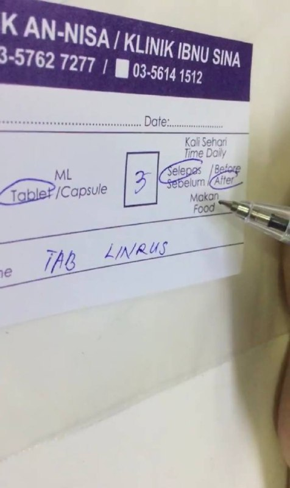

My experience i was a clinic assistant at my house area , my experience working there is fun and i get to learn so many things as add my knowledge about medicine and disease.
i was a waiter at secret recipe , at there i have learn to write names on cakes, taking orders from customers and it makes my communicating skills.
Last but not least i was a book exhibitor at Selangor book fair
